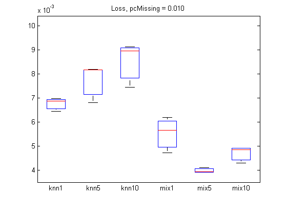
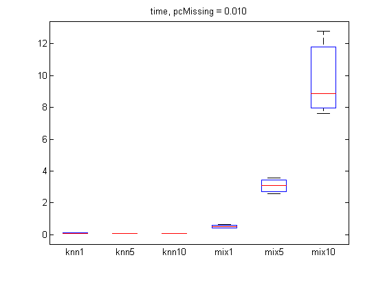
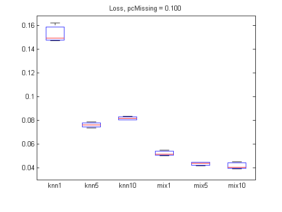
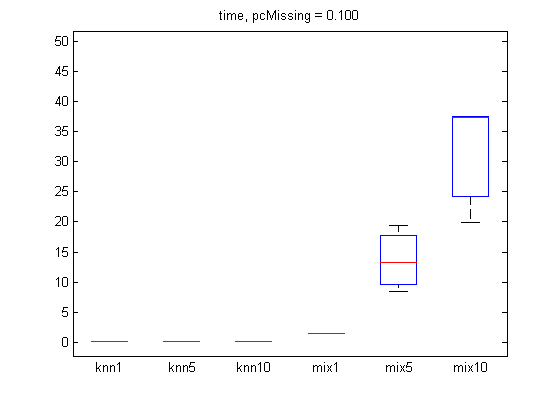

Contents
Comparison of methods for imputing missing values in UCI adult census data
clear;
setSeed(0);
adult = adultDataPreprocess;
X = adult.X;
types = adult.types;
types(types=='m')='d';
types(types=='b')='d';
X = X(1:1000,:);
iscont = (types=='c');
X(:,iscont) = standardize(X(:,iscont));
setSeed(0);
[N, D] = size(X);
pc = [0.01, 0.1];
ntrials = 3;
opts = {'verbose', true};
methodNames = {'knn1', 'knn5', 'knn10', ...
'mix1', 'mix5', 'mix10'};
imputeFns = {@(X)imputeKnnMixed(X, 1), ...
@(X)imputeKnnMixed(X, 5), ...
@(X)imputeKnnMixed(X, 10), ...
@(X)imputeMixGaussDiscrete(X, 1, types, opts{:}), ...
@(X)imputeMixGaussDiscrete(X, 5, types, opts{:}),...
@(X)imputeMixGaussDiscrete(X, 10, types, opts{:})
};
nMethod = length(methodNames);
For each percentage of missing, do several trials
for pidx = 1:length(pc)
errors = zeros(ntrials, nMethod);
times = zeros(ntrials, nMethod);
for trial = 1:ntrials
missing = rand(N,D) < pc(pidx);
Xmiss = X;
Xmiss(missing) = NaN;
for method = 1:nMethod
fn = imputeFns{method};
tic
fprintf('p %3.5f, trial %d, method %s\n', pc(pidx), trial, methodNames{method});
Ximpute = fn(Xmiss);
t=toc;
times(trial, method) = t;
errors(trial, method) = imputationLossMixed(X, Ximpute, missing, types);
end
end
p 0.01000, trial 1, method knn1
p 0.01000, trial 1, method knn5
p 0.01000, trial 1, method knn10
p 0.01000, trial 1, method mix1
1: LL = -24207.355
2: LL = -15561.843
3: LL = -15561.527
p 0.01000, trial 1, method mix5
1: LL = -20942.178
2: LL = -14802.746
3: LL = -14409.572
4: LL = -14155.734
5: LL = -13931.561
6: LL = -13746.078
7: LL = -13617.611
8: LL = -13527.820
9: LL = -13444.017
10: LL = -13395.154
11: LL = -13367.101
12: LL = -13345.093
13: LL = -13334.418
p 0.01000, trial 1, method mix10
1: LL = -21111.799
2: LL = -14393.644
3: LL = -13825.205
4: LL = -13391.980
5: LL = -13067.867
6: LL = -12867.568
7: LL = -12723.782
8: LL = -12154.189
9: LL = -11203.614
10: LL = -10951.770
11: LL = -10854.693
12: LL = -10492.650
13: LL = -9522.303
14: LL = -9126.445
15: LL = -9057.845
16: LL = -8998.568
17: LL = -8932.870
18: LL = -8894.606
19: LL = -8862.688
20: LL = -8823.009
21: LL = -8673.344
22: LL = -8024.306
23: LL = -7929.616
24: LL = -7893.885
25: LL = -7867.254
26: LL = -7843.016
27: LL = -7836.126
p 0.01000, trial 2, method knn1
p 0.01000, trial 2, method knn5
p 0.01000, trial 2, method knn10
p 0.01000, trial 2, method mix1
1: LL = -23025.462
2: LL = -15525.668
3: LL = -15525.449
p 0.01000, trial 2, method mix5
1: LL = -20957.485
2: LL = -14984.863
3: LL = -14554.180
4: LL = -14276.870
5: LL = -14049.718
6: LL = -13868.015
7: LL = -13700.271
8: LL = -13562.065
9: LL = -13404.127
10: LL = -13342.216
11: LL = -13302.667
12: LL = -13276.788
13: LL = -13254.077
14: LL = -13233.044
15: LL = -13211.132
16: LL = -13183.463
17: LL = -13161.142
18: LL = -13148.619
p 0.01000, trial 2, method mix10
1: LL = -20869.528
2: LL = -14245.961
3: LL = -13548.306
4: LL = -13214.522
5: LL = -13021.641
6: LL = -12870.617
7: LL = -12765.754
8: LL = -12704.044
9: LL = -12659.057
10: LL = -12626.408
11: LL = -12602.789
12: LL = -12572.064
13: LL = -12543.259
14: LL = -12519.789
15: LL = -12484.049
16: LL = -12437.696
17: LL = -12337.865
18: LL = -11914.442
19: LL = -11038.448
20: LL = -9766.317
21: LL = -9116.371
22: LL = -8843.966
23: LL = -8574.611
24: LL = -8231.607
25: LL = -8043.966
26: LL = -7980.215
27: LL = -7960.689
28: LL = -7889.712
29: LL = -7803.397
30: LL = -7735.434
31: LL = -7669.108
32: LL = -7457.449
33: LL = -6990.931
34: LL = -6729.373
35: LL = -6528.238
36: LL = -6152.266
37: LL = -5964.374
38: LL = -5884.475
39: LL = -5774.848
40: LL = -5711.063
41: LL = -5659.603
42: LL = -5635.949
43: LL = -5617.668
44: LL = -5604.579
45: LL = -5588.306
46: LL = -5577.414
47: LL = -5570.734
48: LL = -5568.426
p 0.01000, trial 3, method knn1
p 0.01000, trial 3, method knn5
p 0.01000, trial 3, method knn10
p 0.01000, trial 3, method mix1
1: LL = -22849.266
2: LL = -15516.261
3: LL = -15515.793
p 0.01000, trial 3, method mix5
1: LL = -21539.196
2: LL = -15215.436
3: LL = -14784.186
4: LL = -14373.993
5: LL = -14013.612
6: LL = -13873.118
7: LL = -13798.977
8: LL = -13727.688
9: LL = -13621.987
10: LL = -13523.906
11: LL = -13473.155
12: LL = -13440.146
13: LL = -13407.303
14: LL = -13369.580
15: LL = -13337.127
16: LL = -13300.187
17: LL = -13284.734
18: LL = -13269.376
19: LL = -13249.705
20: LL = -13222.127
21: LL = -13189.667
22: LL = -13182.944
p 0.01000, trial 3, method mix10
1: LL = -21238.304
2: LL = -14595.652
3: LL = -13954.716
4: LL = -13566.812
5: LL = -13283.477
6: LL = -13096.723
7: LL = -12976.569
8: LL = -12880.143
9: LL = -12825.792
10: LL = -12781.033
11: LL = -12736.518
12: LL = -12643.592
13: LL = -12373.456
14: LL = -12216.871
15: LL = -12178.831
16: LL = -11986.189
17: LL = -11653.103
18: LL = -11524.030
19: LL = -11400.393
20: LL = -11308.555
21: LL = -11072.448
22: LL = -10940.894
23: LL = -10883.130
24: LL = -10572.647
25: LL = -9910.133
26: LL = -9403.737
27: LL = -9072.759
28: LL = -8980.496
29: LL = -8944.406
30: LL = -8934.358
31: LL = -8921.019
32: LL = -8919.606
p 0.10000, trial 1, method knn1
p 0.10000, trial 1, method knn5
p 0.10000, trial 1, method knn10
p 0.10000, trial 1, method mix1
1: LL = -24931.169
2: LL = -16134.644
3: LL = -16102.224
4: LL = -16101.753
p 0.10000, trial 1, method mix5
1: LL = -19916.151
2: LL = -15878.710
3: LL = -15628.202
4: LL = -15346.793
5: LL = -15101.044
6: LL = -14921.002
7: LL = -14784.341
8: LL = -14682.428
9: LL = -14614.849
10: LL = -14577.817
11: LL = -14552.484
12: LL = -14531.954
13: LL = -14513.394
14: LL = -14497.488
15: LL = -14483.696
p 0.10000, trial 1, method mix10
1: LL = -19833.085
2: LL = -15472.893
3: LL = -15030.211
4: LL = -14763.963
5: LL = -14557.728
6: LL = -14379.548
7: LL = -14213.047
8: LL = -14068.780
9: LL = -13950.470
10: LL = -13835.196
11: LL = -13643.924
12: LL = -13318.421
13: LL = -12860.962
14: LL = -12072.571
15: LL = -11016.467
16: LL = -10285.196
17: LL = -10090.054
18: LL = -9886.782
19: LL = -9716.382
20: LL = -9534.802
21: LL = -9285.543
22: LL = -8994.225
23: LL = -8764.631
24: LL = -8668.803
25: LL = -8568.015
26: LL = -8456.717
27: LL = -8323.581
28: LL = -8181.050
29: LL = -7955.538
30: LL = -7731.401
31: LL = -7629.625
32: LL = -7570.576
33: LL = -7536.354
34: LL = -7500.766
35: LL = -7461.132
36: LL = -7434.953
37: LL = -7420.779
38: LL = -7410.670
39: LL = -7401.071
40: LL = -7391.563
41: LL = -7388.216
p 0.10000, trial 2, method knn1
p 0.10000, trial 2, method knn5
p 0.10000, trial 2, method knn10
p 0.10000, trial 2, method mix1
1: LL = -22463.670
2: LL = -16098.812
3: LL = -16081.032
4: LL = -16080.811
p 0.10000, trial 2, method mix5
1: LL = -21286.063
2: LL = -15857.659
3: LL = -15479.843
4: LL = -15111.130
5: LL = -14889.727
6: LL = -14773.055
7: LL = -14701.581
8: LL = -14638.203
9: LL = -14584.868
10: LL = -14544.832
11: LL = -14500.932
12: LL = -14470.079
13: LL = -14453.641
14: LL = -14432.875
15: LL = -14412.229
16: LL = -14400.343
p 0.10000, trial 2, method mix10
1: LL = -20251.306
2: LL = -15370.299
3: LL = -14814.926
4: LL = -14446.050
5: LL = -14208.584
6: LL = -14044.344
7: LL = -13934.383
8: LL = -13868.501
9: LL = -13814.196
10: LL = -13774.691
11: LL = -13743.644
12: LL = -13721.004
13: LL = -13706.447
14: LL = -13697.029
p 0.10000, trial 3, method knn1
p 0.10000, trial 3, method knn5
p 0.10000, trial 3, method knn10
p 0.10000, trial 3, method mix1
1: LL = -29158.737
2: LL = -16213.134
3: LL = -16080.241
4: LL = -16077.123
p 0.10000, trial 3, method mix5
1: LL = -21046.701
2: LL = -15902.297
3: LL = -15539.969
4: LL = -15193.947
5: LL = -14936.772
6: LL = -14794.816
7: LL = -14726.093
8: LL = -14681.785
9: LL = -14652.494
10: LL = -14631.816
11: LL = -14609.367
12: LL = -14583.229
13: LL = -14559.315
14: LL = -14540.413
15: LL = -14528.198
p 0.10000, trial 3, method mix10
1: LL = -19755.444
2: LL = -15307.527
3: LL = -14813.798
4: LL = -14488.639
5: LL = -14235.550
6: LL = -14054.963
7: LL = -13928.008
8: LL = -13834.927
9: LL = -13740.381
10: LL = -13602.586
11: LL = -13361.214
12: LL = -13029.585
13: LL = -12589.126
14: LL = -12080.775
15: LL = -11614.859
16: LL = -11231.707
17: LL = -11021.680
18: LL = -10956.508
19: LL = -10923.142
20: LL = -10909.903
21: LL = -10893.951
22: LL = -10881.082
23: LL = -10870.995
Plot
figure;
boxplot(errors, 'labels', methodNames);
title(sprintf('Loss, pcMissing = %5.3f', pc(pidx)));
printPmtkFigure(sprintf('imputationMixedAdultError%dpc', pc(pidx)*100));
figure;
boxplot(times, 'labels', methodNames);
title(sprintf('time, pcMissing = %5.3f', pc(pidx)));
printPmtkFigure(sprintf('imputationMixedAdultTime%dpc', pc(pidx)*100));
   
end